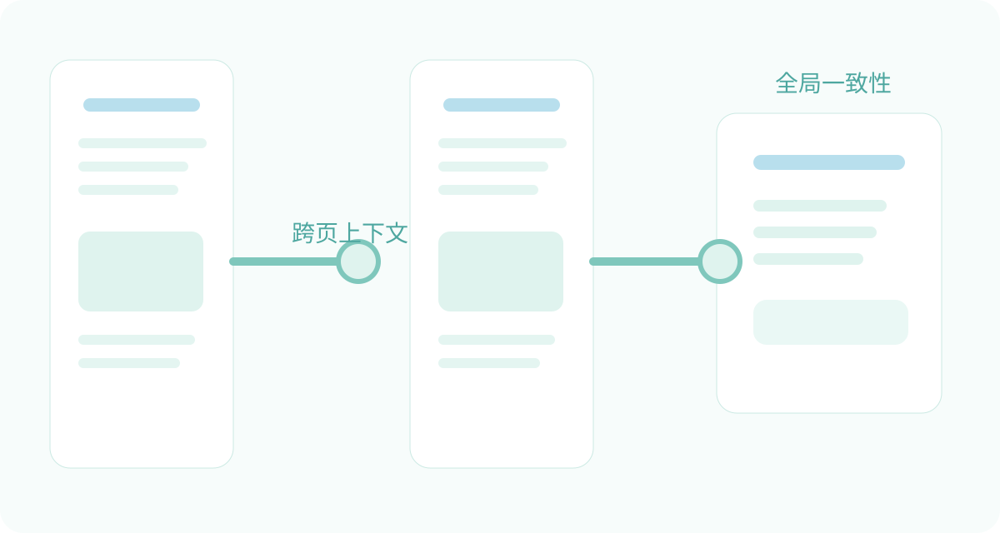

长文档解析的结构恢复思路
本文记录一个偏混合式的长文档结构恢复设计。核心目标不是单页分类，而是结合页内结果、跨页上下文与全局一致性，对整个文档的元素类别、关系与层级进行恢复。

一、核心思路
先做页内结构理解，再引入跨页上下文补充信息，随后进行全局一致性提取，并最终对低置信对象进行统一校正。
二、为什么不能只做单页判断
标题、页眉页脚、跨页表格、图表说明和目录结构，很多都依赖前后页信息。如果只看当前页，容易产生歧义和错判。
三、适合沉淀到站点里的内容
- 模块图和 Mermaid 图
- 规则设计和候选对象策略
- 全局一致性约束的定义
- 实验记录与失败案例